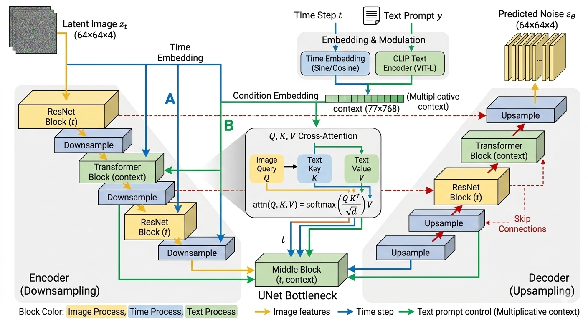
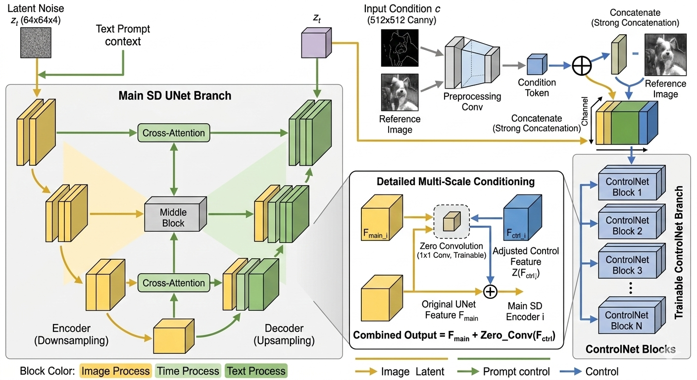
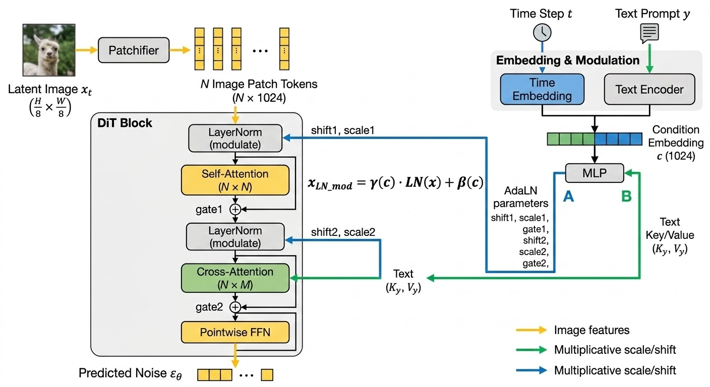

生成架构
Stable Diffusion V1/V2
SD 架构并不复杂，它由三个看似独立但配合完美的模块组成：
A. VAE (变分自编码器) —— 降维压缩
- 痛点： 直接在 \(512 \times 512\) 的像素空间上做扩散，计算量大到爆炸。
- 方案： VAE 的 Encoder 把图片压缩到一个极小的“潜空间”（Latent Space，比如 \(64 \times 64\)）。所有的扩散和去噪都在这个小空间里完成，最后用 Decoder 把结果“放大”回像素。
- 比喻： 先把高清图压成“缩略图”来处理，处理完了再还原。
B. CLIP Text Encoder —— 语义对齐
- 创新： SD 并没有训练自己的文本理解模型，而是直接“白嫖”了 CLIP 的文本分支。
- 意义： 因为 CLIP 已经把“狗”的文字向量和“狗”的图片向量对齐了。SD 借用 CLIP 的文字向量，就能精准地告诉图像模型：“嘿，现在我们要往‘狗’的方向去噪”。
C. UNet (去噪骨架) —— 条件注入
- 作用： 它是生成的主体。它通过 Cross-Attention（交叉注意力） 接收来自 CLIP 的文本指令。
条件注入
SD 1.5 的核心骨架是 UNet，它采用的是一种“三位一体”的条件注入方式。与 DiT 这种“每一层都全局重塑”的思路不同，SD 1.5 的注入更像是在一个精密的管道系统中，通过不同的“接口”泵入信息。
三种注入路径
在 UNet 的去噪过程中，条件 \(C\)（主要指经过 CLIP 提取的文本特征）通过以下三个位置施加影响力：
A. 核心路径：Cross-Attention (交叉注意力)
这是最重要的一环。文本信息作为 Key (\(K\)) 和 Value (\(V\))，图像特征作为 Query (\(Q\))。
图像的每个像素点（\(Q\)）都会去询问文本向量（\(K\)）：“我这个位置应该对应哪个单词？”然后把对应的语义（\(V\)）吸收到自己的特征里。
B. 辅助路径：Time Embedding (时间步注入)
扩散模型必须知道现在是第几步（\(t\)）。SD 1.5 将 \(t\) 转换成正弦位置编码，然后通过 Add (加法) 的方式注入到 ResNet Block 中。
告诉模型现在是该画轮廓（\(t\) 很大）还是该填细节（\(t\) 很小）。
C. 全局路径：Concatenation (拼接，主要用于图生图/Inpainting)
如果你是在做局部重绘，Mask 后的图片会直接在 Channel（通道） 维度上和噪声拼接在一起。
SD 1.5 整体数据流图
我们可以把整个推理过程想象成一个“特征漏斗”：
- 文本编码：用户输入 Prompt → CLIP Text Encoder → 得到 \(77 \times 768\) 的 Tensor（称为
context）。 - 噪声初始化：随机生成一个 \(64 \times 64 \times 4\) 的隐空间噪声 \(z_t\)。
- UNet 循环去噪：
- \(z_t\) 进入 UNet 的 Encoder (下采样)。
- 在每个 ResBlock 中，加入 Time Embedding。
- 在每个 Transformer Block 中，通过 Cross-Attention 吸收
context。 - 经过中间层（Mid-Block），进入 Decoder (上采样)，通过 Skip Connection 补回细节。
- 预测噪声：输出预测出的噪声 \(\epsilon_\theta\)，用它更新 \(z_t\) 得到 \(z_{t-1}\)。
- VAE 解码：循环结束后的 \(z_0\) 通过 VAE Decoder 还原成 \(512 \times 512\) 的图片。

核心注入逻辑的伪代码实现
为了让你看清 \(Q, K, V\) 是怎么工作的，这里展示 UNet 中 Cross-Attention 层 的简化逻辑：
import torch
import torch.nn as nn
class CrossAttention(nn.Module):
def __init__(self, query_dim, context_dim, heads=8):
super().__init__()
self.to_q = nn.Linear(query_dim, query_dim, bias=False)
# 注意：K和V是来自文本(context)，维度可能与图像不同
self.to_k = nn.Linear(context_dim, query_dim, bias=False)
self.to_v = nn.Linear(context_dim, query_dim, bias=False)
self.scale = (query_dim // heads) ** -0.5
def forward(self, x, context=None):
# x: 图像特征 [Batch, Height*Width, Channels]
# context: 文本特征 [Batch, 77, 768] (来自CLIP)
q = self.to_q(x)
k = self.to_k(context) # 注入条件
v = self.to_v(context) # 注入条件
# 计算注意力得分
sim = torch.einsum('b i d, b j d -> b i j', q, k) * self.scale
attn = sim.softmax(dim=-1)
# 将文本权重加权到图像特征上
out = torch.einsum('b i j, b j d -> b i d', attn, v)
return out
class UNetResBlock(nn.Module):
def forward(self, x, time_emb):
# 时间步注入通常是简单的加法或 Scale-Shift
# time_emb 来自 MLP(Sine_Cosine_Encoding(t))
return x + self.mlp_time(time_emb)
ControlNet
controlNet 的核心是：保持原本预训练的Unet冻结，复制一份Unet的Encoder用于生成修改
ControlNet 的核心架构设计（克隆与锁定）
ControlNet 的天才之处在于它解决了“如何在不破坏模型原有生成能力（Catastrophic Forgetting）的情况下，增加强力的空间控制（线稿/姿态）”这一难题。
它采用了一种“主干-分支”的结构：
- 主干分支：Frozen Stable Diffusion Block（锁定副本）
- 做法： 完整复制一份预训练好的 Stable Diffusion UNet 的 Encoder（下采样） 和 Middle Block（中间块）。
- 状态：彻底冻结 (Locked)。在训练过程中，它的权重绝不更新。
- 作用： 保证模型依然拥有强大的生成高质量图片、遵循文本 Prompt 的基础能力。
- 控制分支：Trainable ControlNet Block（可训练副本）
- 做法： 复制出的这一份平行的 Encoder 结构是可训练的。
- 状态：解冻 (Trainable)。它负责接收额外的控制信号（如 Canny 边缘图、人体骨架图）。
- 作用： 学会如何从控制图中提取空间约束特征。
ControlNet 详细数据流图
我们可以把整个数据流想象成两条平行的河流，最终在一个个“水坝（零卷积）”处汇合：
A. 条件预处理 (Condition Preprocessing)
- 输入： 用户提供一张参考图（e.g., 一个模特的照片）。
- 提取： 通过 Canny 边缘检测器或 OpenPose 姿态估计算法，提取出控制图 \(C\)（e.g., 模特的姿态骨架图）。
B. 双路Encoder运行 (Dual Encoder Run)
-
控制信号处理： 控制图 \(C\) 经过一个小型的卷积网络（ControlNet Preprocessor），处理成和隐空间噪声 \(z_t\) 相同维度的 Tensor。
-
并行下采样：
-
主干路径： 隐空间噪声 \(z_t\) 进入冻结的 UNet Encoder。
-
控制路径： 隐空间噪声 \(z_t\) 和处理后的控制图特征图在通道维度上拼接在一起，进入可训练的 ControlNet Encoder。
-
逐层控制（Multi-scale Conditioning）：
-
ControlNet 的每一层（Block）都会产生一个特征向量 \(F_{ctrl}^i\)。
-
零卷积（Zero Conv）：\(F_{ctrl}^i\) 经过一个初始化为全 0 的 \(1 \times 1\) 卷积层（记为 \(\mathcal{Z}_i\)）。
-
残差连接： 原始 UNet 的对应层输出 \(F_{main}^i\)，加上通过零卷积调整后的控制特征：
$\(F_{merged}^i = F_{main}^i + \mathcal{Z}_i(F_{ctrl}^i)\)$
-
在训练初期，\(\mathcal{Z}_i(F_{ctrl}^i) = 0\)，模型完全听原始的 Prompt。随着训练的进行，零卷积的权重慢慢变大，控制信号开始发挥威力。
C. 中间块与Decoder还原 (Middle & Decoder)
- 中间块： 主干和控制分支的 Middel Block 输出也通过零卷积融合。
- Skip Connection 增强： ControlNet 融合后的特征，通过 Skip Connection（跳跃连接） 直接送给 UNet 的 Decoder。
- 去噪还原： UNet Decoder（此时也被解冻训练）接收到融合了文本（Cross-Attention）和空间控制（ControlNet）的特征，精准预测噪声，更新隐空间噪声。
可视化：ControlNet 流程与零卷积细节
这张图左侧展示了主干分支（Frozen）和控制分支（Trainable）如何平行运行，并在每一层通过零卷积融合；右侧 inset 清晰地展示了“主干特征 + \(\mathcal{Z}(控制特征)\)”的数学本质。
细节 1：初始输入的“强力拼接 (Strong Concatenation)”
在图的右侧（ControlNet 分支）顶部，你可以清晰地看到一个三路汇合点。原本的输入图片（Reference Image，e.g., Canny 线稿）经过了一个专门的预处理网络 (preprocessing Conv)，被处理成和噪声 \(z_t\)（黄色箭头）相同的尺寸和通道数。
- 注意看那个“拼接 (Concatenate)”图标：噪声 \(z_t\) 和预处理后的控制图特征，在 Channel（通道）维度上强制拼接，形成了一个厚度翻倍的新 Tensor。
- 这个厚厚的拼接 Tensor，才是 Trainable ControlNet Branch 的初始输入。
细节 2：逐层融合的“残差相加 (Residual Addition)”
在图的中心区域（融合区域），我们详细展示了从 Block 1 到 Block N 的融合细节。
- 主分支（Locked SD UNet Branch）每一层的输出 \(F_{main}^i\) 并没有直接传给下一层。
- 控制分支（Trainable ControlNet Branch）每一层的输出 \(F_{ctrl}^i\)，先经过了一个专门的“零卷积 (Zero Conv)”图标（这个图标特别重要，初始化为 0）。
- 数学融合： 原始特征 \(F_{main}^i\) 与经过零卷积调整后的 \(F_{ctrl}^i\) 在一个“plus (+)”图标处汇合，进行了 Element-wise Addition（逐元素相加）。
- 融合后的新特征 \(F_{merged}^i\)，才继续向下传播给 Decoder。这完美体现了“Unet 每层最终的输出是由冻结的 Unet 和 ControlNet 残差之和组成的”这一特性。

DiT
它是生成式 AI 的分水岭：向上承接了 ViT (Vision Transformer) 的强大扩展性，向下开启了 Sora 和 Flux 的大模型时代。
我们可以从 DiT 的三个核心支柱开始拆解：
切片
在 UNet 中，图像是以像素特征图（Feature Map）的形式存在的；而在 DiT 中，图像被切成了“块”。
- 操作：将 Latent 空间中 \(32 \times 32 \times 4\) 的张量切成 \(p \times p\) 的小块。
- 线性嵌入：每个小块被拉平（Flatten）并通过一个线性层映射成一个 Token（向量）。
- 意义：这让图像数据在格式上与 NLP 中的词向量完全对等，使得 Transformer 处理视觉信息变得像处理文字一样自然。
条件注入
这是 DiT 论文中最精华的部分。Transformer 需要知道当前是在哪一个“时间步 \(t\)”以及“什么标签 \(c\)”，DiT 比较了三种方案，最终 adaLN-Zero 胜出。
Note
本质就是训练一个网络，把输入的条件（prompt，t等）转化成LayerNorm时的缩放参数和输出时的门控参数，用来指导self-attention, cross-attention, FFN
- 原理：
- 将 \(t\) 和 \(c\) 合并，通过一个多层感知机（MLP）预测出 6 个回归参数：\(\gamma_1, \beta_1, \alpha_1, \gamma_2, \beta_2, \alpha_2\)。
- \(\gamma, \beta\) 用于 LayerNorm 的缩放和位移。
- \(\alpha\)（最重要的创新）是一个缩放因子，用于在残差连接（Residual Connection）之前对整个 Block 的输出进行缩放。
- 为什么叫 Zero？：在初始化时，\(\alpha\) 会被设为 0。这意味着在训练初期，每个 Transformer Block 表现得像恒等变换（Identity Map），这极大地稳定了大规模扩散模型的训练。
传统的条件注入（如 ResNet）多是加法控制：\(x = x + \text{MLP}(condition)\)。
而 DiT 证明了，自适应归一化（Adaptive Layer Norm, AdaLN） 这种乘法控制对扩散模型的去噪性能至关重要。
其核心公式可以表示为：
- \(h\)：当前的隐层特征（Image Patches）。
- \(y\)：外部条件（时间步 \(t\) 和 类别/文本 Embedding 的融合）。
- \(\gamma(y), \beta(y)\)：通过一个线性层从条件 \(y\) 中预测出来的缩放（Scale）和偏移（Shift）参数。
数学直觉： 不同的 \(t\)（去噪阶段）和不同的文本，应该直接改变 Transformer Block 中神经元的激活分布。
具体实现：AdaLN-Zero
DiT 论文提出了一种增强版实现，叫做 AdaLN-Zero。它在标准的 Transformer Block 上做了三处注入：
A. 序列处理
- 输入： 图像 Patch \(x\)。
- 条件融合： 将时间步 \(t\) 和 标签 \(c\) 相加，通过一个多层感知机（MLP）得到一个粗略的条件向量。
B. 块内注入 (Inside the Block)
在每一个 Transformer Block 开头，这个条件向量会分裂出 6 个不同的回归参数：
- \(\gamma_1, \beta_1\)：用于 Self-Attention 之前的 LayerNorm。
- \(\alpha_1\)：用于 Self-Attention 输出的缩放（Scaling）。
- \(\gamma_2, \beta_2\)：用于 FFN 之前的 LayerNorm。
- \(\alpha_2\)：用于 FFN 输出的缩放。
C. “Zero” 初始化
这是训练稳定的关键：将预测 \(\alpha\) 的线性层初始化为全 0。
- 效果： 在训练初期，整个 Residual Block 相当于一个恒等映射（Identity），因为 \(\alpha=0\) 导致残差分支被暂时切断。
- 意义： 极大地简化了深层 Transformer 在扩散初期的训练难度。
在原版的 DiT 论文中，作者为了证明 Transformer 也能做扩散，设计得比较克制（只用了 AdaLN 控制 Self-Attention 和 FFN，共 6 个参数）。但到了处理复杂文本（如 Prompt 极长）或视频生成时，6 个参数确实不够用了。
在像 Flux 或 Stable Diffusion 3 这种模型中，条件注入变得更加“激进”。
- 加法控制 (Shift/Scale for Cross-Attn)：在图像 \(Q\) 去查文本 \(KV\) 之前，先用 AdaLN 对图像特征进行一次“语义预处理”。
- 门控控制 (Gate for Cross-Attn)：模型可以动态决定：这一层我到底要多大程度上听 Prompt 的话？
- 如果 Gate 趋近 0：这一层完全忽略文本，只管维护图像自身的纹理。
- 如果 Gate 很大：这一层强力引入文本语义。
甚至控制文本端 (Joint Attention)：
在最新的 MM-DiT (Multimodal DiT) 架构中，图像 Token 和文本 Token 是平等的：
- 线性层不仅为图像分支生成 6 个参数。
- 还会为文本分支也生成 6 个参数。
- 逻辑： 文本不应该是一成不变的。随着去噪的进行，图像的状态也会反过来影响文本的表示，形成一种“双向奔赴”。
现在的模型（如 Sora 的变体）中，那个线性层（MLP）输出的向量维度可以非常大。它可以同时控制：
- 空间参数：指导物体长什么样（Shape）。
- 时间参数：指导物体怎么动（Motion）。
- 频率参数：在某些模型中，AdaLN 甚至被用来调整特征图的高频和低频分量。

DiT 块的结构伪代码
class DiTBlock(nn.Module):
def __init__(self, hidden_size, num_heads):
# ... 初始化 ...
# adaLN_modulation 负责从条件向量预测 6 个参数
self.adaLN_modulation = nn.Sequential(
nn.SiLU(),
nn.Linear(hidden_size, 6 * hidden_size)
)
def forward(self, x, c):
# c 是融合了时间步和文本的 Embedding
# 1. 预测 scale, shift, gate 参数
shift_msa, scale_msa, gate_msa, shift_mlp, scale_mlp, gate_mlp = \
self.adaLN_modulation(c).chunk(6, dim=1)
# 2. 注入 Attention 分支
# 注意这里的 gate_msa 就是 alpha，初始化为 0
x = x + gate_msa.unsqueeze(1) * self.attn(
modulate(self.norm1(x), shift_msa, scale_msa)
)
# 3. 注入 FFN 分支
x = x + gate_mlp.unsqueeze(1) * self.mlp(
modulate(self.norm2(x), shift_mlp, scale_mlp)
)
return x
def modulate(x, shift, scale):
# 实现乘法控制：(1 + scale) * x + shift
return x * (1 + scale.unsqueeze(1)) + shift.unsqueeze(1)
Scaling Law
DiT 证明了，只要增加 Transformer 的层数（Depth）或隐藏层维度（Width），生成的图像质量（FID）就会稳步提升。
- DiT-XL/2：表示使用了最高配置的架构（XL），且 Patch Size 为 2。
- 核心发现：计算量（Gflops）越大，图像质量越好。这种可预测的进步是 UNet 架构难以提供的，也是后来大厂纷纷砸钱搞大模型的技术底气。